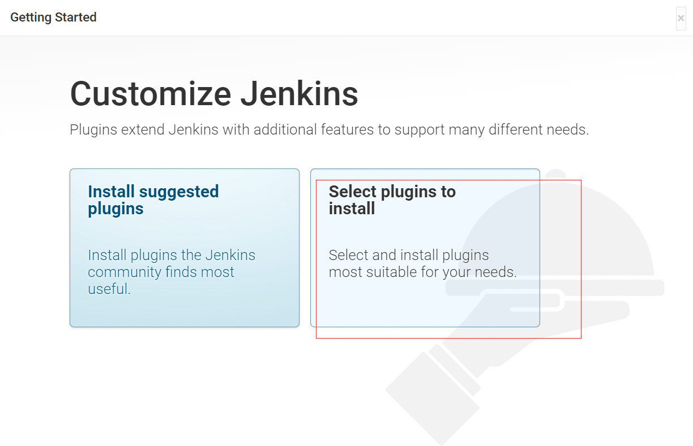
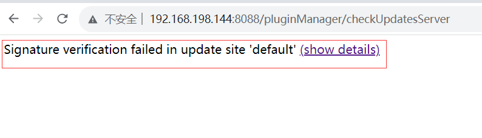

1.centos7下安装java8
1.检查当前系统中是否已安装JDK
1 | yum list installed | grep java |
2.卸载Java，若未检测出jdk则跳过
1 | yum remove 检测出的包 |
3.下载
2.解压
用xftp或其他方式将jdk安装包上传到/usr/local/src目录下
解压
1
tar -zxvf jdk-8u381-linux-x64.tar.gz
重命名解压后的目录
1
mv jdk1.8.0_381 jdk
3.配置环境变量
1 | vim /etc/profile |
写入JAVA环境变量
1
2
3# Java环境变量
export JAVA_HOME=/usr/local/src/jdk
export PATH=$PATH:$JAVA_HOME/bin重新载入配置文件
1
source /etc/profile
4.验证安装结果
1 | java -version |
2.安装jenkins
2.1 卸载jenkins
1 | #查看Jenkins |
2.2 安装jenkins
1.下载
2.用xftp或其他方式将jenkins安装包上传到/usr/local/src目录下
3.rpm安装
1 | rpm -ivh jenkins-2.346-1.1.noarch.rpm |
4.启动jenkins，失败
1 | systemctl start jenkins |
5.修改配置文件
1 | vim /etc/init.d/jenkins |
jdk地址错误，修改为jdk的安装目录
更新配置
1
systemctl daemon-reload
6.重新启动jenkins
1 | systemctl start jenkins |
1 | systemctl stop jenkins |
7.修改jenkins配置
1 | vim /etc/sysconfig/jenkins |
1 | JENKINS_USER="jenkins" |
1 | JENKINS_USER="root" |
8.再次启动jenkins
1 | systemctl start jenkins |
9.访问jenkins
查找密码：
1
2[root@localhost ~]# cat /var/lib/jenkins/secrets/initialAdminPassword
9743fe1f8a334343a1ba1469a019630c
10.安装插件，稍后配置国内镜像再安装

11.创建一个新的管理员
12.来到jenkins后台界面
2.3 jenkins插件管理
Jenkins本身不提供很多功能，我们可以通过使用插件来满足我们的使用。例如从Gitlab拉取代码，使用
Maven构建项目等功能需要依靠插件完成。接下来演示如何下载插件修改Jenkins插件下载地址
Jenkins国外官方插件地址下载速度非常慢，所以可以修改为国内插件地址
- Jenkins->系统管理->管理插件->可选插件
可选插件为空
立即获取

在 JDK8 中，一些较旧的加密算法被禁用，这导致了此行为
通过添加以下 Java 选项来抑制签名验证检查
进入jenkins配置文件
1
vim /etc/sysconfig/jenkins
加入
-Dhudson.model.DownloadService.noSignatureCheck=true java运行参数重启jenkins
1
systemctl restart jenkins
Jenkins->系统管理->管理插件->可选插件：不为空
这样做是为了把Jenkins官方的插件列表下载到本地，接着修改地址文件，替换为国内插件地址
1
cd /var/lib/jenkins/updates

1
sed -i 's/http:\/\/updates.jenkinsci.org\/download/https:\/\/mirrors.tuna.tsinghua.edu.cn\/jenkins/g' default.json && sed -i 's/http:\/\/www.google.com/https:\/\/www.baidu.com/g' default.json
插件管理-高级，把升级站点改为国内插件下载地址
1
https://mirrors.tuna.tsinghua.edu.cn/jenkins/updates/update-center.json
重启jenkins
1 | docker run -d \ |